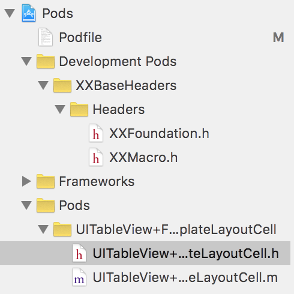

基于 CocoaPods 和 Git 的 iOS 工程组件化实践
前言
上一篇文章《浅析 iOS 应用组件化设计》发出之后，有读者反馈（并没有）想了解一下实现 iOS 组件化的具体步骤。本着本博客一贯的面向初学者友好的原则，特此新开一篇文章，详述一下使用 CocoaPods 和 Git 进行 iOS 组件化开发的具体流程。
注：本流程仅供学习参考，其中所有展示的代码均为虚构，如有雷同，你一定是在逗我。
对于一个没有实施过组件化拆分的工程来说，其中很可能充满了大量不合理的类，方法，头文件和各种错乱的依赖关系，因此首先要进行的第一步是模块拆分。
模块拆分
模块拆分可以分成两个部分，基础模块拆分和业务模块拆分。基础模块通常是稳定的依赖代码，业务模块是涉及到业务的需要频繁改动的代码。我们想达到的目标有下面几点：
- 对于基础模块来说，其本身应该是自洽的，即可以单独编译或者几个模块合在一起可以单独编译。
- 所有的依赖关系都应该是业务模块指向基础模块的。
- 基础模块之间尽量避免产生横向依赖。
基础模块拆分
对于基础模块来说，我们直接通过把基础模块单独拆分成 Pod，来进行模块的划分，而不是在旧有的工程上去建立新的 Group 之类的。这样做有一个明显的好处，Pod 当中如果引用了主工程当中的头文件，会直接造成编译失败。这样强迫我们拆分出来的 Pod 一定是对主工程没有依赖的（即没有反向依赖）。
具体的做法如下：首先我们把选择一个可以单独拆分的模块，把所有的文件从主工程中删除掉，放到一个新的文件夹里，例如这里我们把一些基础的头文件拆出来，取名为 XXBaseHeaders。创建一个新的文件夹，名为 XXBaseHeaders，在里面创建一个子文件夹 Headers 和 XXBaseHeaders.podspec，把旧代码放到 Headers 文件夹当中，现在目录结构看起来应该是这样的：
XXBaseHeaders
- Headers
- XXFoundation.h
- XXMacro.h
- ...
- XXBaseHeaders.podspec
然后我们开始编辑 podspec：
Pod::Spec.new do |s|
s.name = "XXBaseHeaders"
s.version = "1.0.0"
s.source_files = "Headers/*.{h,m}"
end
只需这么简单的几行，这个 pod 就可以在本地工作了，需要注意的一点是，这里的 name，文件夹名称，podspec 本身的文件名，这三个需要都是一致的，不然会报错。
现在主工程已经编译不过去了，因为我们去掉了几个文件，现在我们通过 Podfile 把它们再加到主工程里面，在已有的 Podfile 里加入下面这一行：
pod 'XXBaseHeaders', :path => '../XXBaseHeaders/'
注意这里的 :path 我使用的是相对路径，实际使用时不管用哪种路径，只要可以找到我们刚才创建的 Pod 文件夹就可以。还需要注意一点，就是 Pod 的名称也是要和文件夹名称这些保持一致。
然后我们通过执行下面的命令，把这个 Pod 安装到主工程当中：
pod install --verbose --no-repo-update
由于我们想添加的是一个本地的 Pod，所以我们加入了 --no-repo-update 来避免更新远程 Spec 仓库，加快安装速度。
安装成功之后，主工程的 Pods 看起来是这样的：

可以看到这里 CocoaPods 把我们本地的仓库放到了 Development Pods 里面。这里和下面那些 Pods 的区别在于，下面的 Pods 本身是从主仓库下载然后拷贝到当前工程中，默认权限是只读的，如果尝试修改会出现类似下面的提示：

而 Development Pods 则不是进行的拷贝，而是直接引用了本地 Pod 的文件，可以直接做修改，因为实际上就是在修改 XXBaseHeaders 这个文件夹里的文件。
这里建议直接把
Pods和Podfile.lock移出版本控制系统，因为之后的操作会频繁进行 Pods 的增删，同时由于各个模块本身已经独立成单独的仓库，再放到主工程的代码控制中也没有什么意义了。更新：CocoaPods 官方推荐把
Podfile.lock留在版本控制中，和Podfile一样，以对 Pod 进行版本的锁定。后面我们介绍了通过 Git 的 Tag 来锁定版本的方法，等于是把版本锁定的工作从Podfile.lock移到了Podfile中。在 Podspec 本身保持稳定的情况下，Podfile.lock的作用性就没有那么大了。个中取舍，只能靠读者自行判断。
现在我们已经把模块的代码拆分成了单独的 Pods，可以尝试进行编译了。如果原有的代码依赖控制的比较好的话，进行不多的改动就可以编译成功了。如果发现没办法通过简单的改动让代码通过编译的话，有可能有下面几种情况：
- 出现了反向引用，即引用了主工程中头文件
- 几个模块之间有循环引用的情况，即互相依赖对方
- 使用 Umbrella Header 或者 pch 导致了隐式依赖
对于第一种情况，要区分一下所引用的头文件属于基础模块还是业务模块。如果是基础模块的话，说明所引用的模块比我们当前在拆的模块还要更加“基础”一点，需要把它也拆分出来。如果是业务模块的话，多半是出现了不合理的代码，这种时候需要对代码进行修改了。把依赖业务模块的部分单独拆出来，让基础模块保持干净。
第二种情况，当我们拆分出几个模块之后，可能碰到。在前期的拆分中，基础模块的循环引用还是能够接受的，如果这几个基础模块不会引用到业务模块，就可以暂时先放着，之后再处理。
最难办的是第三种情况，有的时候我们为了方便，会定义一个包含了其它很多 Header 的 Header，类似这样：
/*
* XXKit.h
*/
#import "XXFoundation.h"
#import "XXMacro.h"
#import "XXExtension.h"
// ...
这种 Header 被称为 "Umbrella Header"。对于一个内部完全自洽的模块来说，使用 Umbrealla Header 来对外提供接口是很方便的，例如最常用 UIKit.h：
#import <UIKit/UIKitDefines.h>
#if __has_include(<UIKit/UIAccelerometer.h>)
#import <UIKit/UIAccelerometer.h>
#import <UIKit/UIAccessibility.h>
#endif
#import <UIKit/UIAccessibilityConstants.h>
#if __has_include(<UIKit/UIActivityIndicatorView.h>)
#import <UIKit/UIActivityIndicatorView.h>
#import <UIKit/UIActivity.h>
#import <UIKit/UIActivityItemProvider.h>
#import <UIKit/UIActivityViewController.h>
#import <UIKit/UIActionSheet.h>
#import <UIKit/UIAlertController.h>
#import <UIKit/UIAlertView.h>
// ...
但是在我们的应用工程中，使用 Umbrella Header 很容易导致多余的依赖。例如我们在一个业务模块里面引入了 XXKit.h，但是实际使用到的其实只有 XXMacro.h 当中的某个宏。如果再使用了 pch，那么依赖就变得更加隐式了。
当我们试图把 XXKit.h 拆到 Pod 里的时候，它本身就是一个拥有非常多依赖的模块。对于这种情况，我们要么选择一拆到底，把 XXKit.h 当中所 import 的所有东西都拆出来，形成类似 UIKit.h 那种结构。要么选择去掉 XXKit.h，将所有的依赖显式地写出来。前者可能会导致 XXKit 模块过于庞大，后者可能会导致需要添加大量的 import 代码。
我个人倾向于后者，显式地写出依赖更利于之后进一步的模块化。
通过重复上面提到的拆分过程，我们可以逐渐地把基础依赖从主工程中剥离出来，变成可以直接引用的 Pod。
业务模块拆分
对于业务模块来说，考虑到旧有代码可能没有相关的横向解耦策略，业务模块之间的依赖会非常复杂，难以单独进行拆分，因此我们采用的方法是首先从 group 角度进行重新整理。这样做的好处了降低了成本，同时保证这个过程中代码一直是能够通过编译的。
对业务量很大的工程来说，我个人更加推荐“业务-分层”这样的结构，而不是“分层-业务”，即类似下面的 group 结构：
- BusinessA
- Model
- View
- Controller
- Network
- BusinessB
- Model
- View
- Controller
- Network
这样有利于之后我们把某个业务模块单独剥离出来，也方便开发者快速找到对应业务有关的代码。
当两个不同的业务都依赖一个组件，例如两个页面的业务都需要完成一个相同的网络请求，可以考虑把这个相同的部分单独拆分成一个小的业务，即更加细粒度的业务。尽量避免创建 Common 这样的模块。
风险控制
在拆分模块的过程中，有可能会出现代码在复制粘贴的过程中发生遗漏，或者拆分的代码版本不是最新的代码，导致某个已经修复的 bug 再次被引入。为了避免这种情况，需要注意在拆分代码之前，检查代码是不是最新的代码库里面的，同时除非必要，尽量做整个文件（整个类）的迁移。
另外整个工程在拆分之前都是要在版本控制之下的。当出现问题时，可以从版本控制中拿回旧有的代码，重新放回工程中进行回滚。
私有 Spec 仓库搭建
上传 Pod 到私有 Spec 库
通过上面的步骤，我们把模块拆分成了单独的 Pod，为了让整个项目组都能使用这些 Pod，我们需要在内网环境（或者其它的私有环境）上搭建自己的 Spec 仓库，方便所有人在本地安装依赖环境。
在创建 Spec 仓库之前，首先我们要在远端把各个模块的仓库先单独建立起来。继续以 XXBaseHeaders 为例，我们在目录下创建 git 仓库：
git init
并添加远端仓库，这里以我用自己的 Coding 账号创建了公开仓库：
git remote add origin git@git.coding.net:skyline75489/XXBaseHeader.git
在 push 仓库之前，我们先对 podspec 做些修改：
Pod::Spec.new do |s|
s.name = "XXBaseHeaders"
s.authors = "Someone"
s.homepage = "https://coding.net/u/skyline75489/p/XXBaseHeader/git"
s.summary = "XXBaseHeaders"
s.version = "1.0.0"
s.source = { :git => "git@git.coding.net:skyline75489/XXBaseHeader.git", :branch => "master" }
s.source_files = "Headers/*.{h,m}"
end
其中 s.source 比较重要，写清楚了这个 pod 对应的 git 仓库和分支。其它字段主要是为了通过 CocoaPods 的格式检查，对实际使用没有影响。
下面我们把 pod push 到远端：
git push --set-upstream origin master
下一步，我们创建一个私有的 Spec 仓库，这里面存放的是我们需要的 Pod 的索引，我在 Coding 上创建了一个 MySpec 仓库，我们先把它加到 CocoaPods 当中：
pod repo add MySpec git@git.coding.net:skyline75489/MySpec.git
这里面现在还是空的，下面我们把 XXBaseHeaders push 到仓库中，相当于发布出去：
pod repo push MySpec XXBaseHeaders.podspec --allow-warnings
首先要确保有 MySpec 这个仓库的写权限，才能发布成功。成功之后，MySpec 仓库会有下面这样的目录结构：
XXBaseHeader
- 1.0.0
- XXBaseHeader.podspec
现在使用 pod search XXBaseHeader，如果操作正确的话，应该可以搜索到我们刚刚发布的 pod：
-> XXBaseHeaders (1.0.0)
XXBaseHeaders
pod 'XXBaseHeaders', '~> 1.0.0'
- Homepage: https://coding.net/u/skyline75489/p/XXBaseHeader/git
- Source: git@git.coding.net:skyline75489/XXBaseHeader.git
- Versions: 1.0.0 [MySpec repo]
现在在 Podfile 中我们可以使用远程仓库的 XXBaseHeader 作为依赖了，就像使用普通的第三方库一样：
pod 'XXBaseHeaders', '1.0.0'
为了方便其他人使用，最好在 Podfile 中把我们私有源的地址加进去，这也是 CocoaPods 推荐的做法：
source 'git@git.coding.net:skyline75489/MySpec.git'
这样不需要对私有 Spec 进行 pod repo add 也可以找到对应的仓库了。
结合 Git Tag 进行版本锁定
在开发当中有一个代码锁定的概念，我们希望主工程的代码一直是稳定的，不会因为子工程的更改而发生变化。只有当我们准备好接受子工程更新的时候，才把子工程代码引入主工程。回顾一下上面的 podspec 中的内容：
s.source = { :git => "git@git.coding.net:skyline75489/XXBaseHeader.git", :branch => "master" }
我们指定让 CocoaPods 去对应仓库的 master 分支寻找代码，这就意味着如果两个不同的开发者在 pod install 的过程的间隙，我们向子模块的 master 分支 push 了新的代码，那么他们两个人得到的代码其实是不相同的。对于主仓库而言，重新 pod install 导致子模块的代码已经发生变化，这就引起了主仓库 code base 的不稳定，会引发很多问题。
为了避免这种情况，我们在 podspec 当中指定到对应仓库的某个 tag，确保通过 podspec 得到的代码是稳定的。
下面我们来给 XXBaseHeaders 发布一个新的版本，通过这个例子来展示具体的做法。
首先对已有的 XXBaseHeaders 文件做一些必要的修改，然后进行 commit。确定修改完成，准备好发布版本的时候，修改 podspec：
s.version = "1.0.1"
s.source = { :git => "git@git.coding.net:skyline75489/XXBaseHeader.git", :tag => s.version.to_s }
这里我们让 tag 和版本号保持一致，commit 之后，给仓库打上 tag：
git tag 1.0.1
然后把修改推送到远程：
git push
git push --tags
重复前面讲过的发布的步骤，我们把新版本发布的 MySpec 之后，就可以使用新版本的 Pod 了。所不同的是，通过对 tag 的指定，我们可以确保使用同一个版本号 1.0.1 拿到的 XXBaseHeaders 代码一定是相同的。
风险控制
搭建私有 Spec 的过程不会对工程代码有破坏性的影响。需要注意的是，对于 Spec 仓库权限的控制很重要。由于 Spec 仓库实际上就是一个普通的 git 仓库而已，任何有权限的人都可以修改。一旦有些修改不小心破坏了仓库的结构，就可能直接影响到仓库的正常工作。因此最好只允许少数几个人拥有仓库的写权限，其他人想要发布模块的时候，都把 podspec 交给权限所有者来做。
三、开发流程控制
Git 工作流程
现在我们从单一的主工程，变成了主工程+多个拆分好的基础模块+统一的私有 Spec 仓库。为了避免某个人的工作对其他人开发环境造成影响，需要对整个组的开发流程进行统一的规范。
不管是对于主仓库和子模块仓库，git-flow 都是首先推荐的工作流程。对于小型的团队来说，全盘使用 git-flow 可能会带来一些效率上的影响。这时可以使用简化版的 gif-flow——Github-flow，即基于 Pull Request 的工作流程：

上图来源于 Github 提供的 PDF。下面简单描述一下整个流程：
一个仓库的 master 分支只有所有者可以有权限更改，其他的贡献者想更改的话，需要自己创建新的分支（在 Github 上就是进行 fork），然后进行更改，之后把更改向原仓库发送 Pull Request。Pull Request 就是一个合并的请求，其中可以看到贡献者的更改，项目主人和其他维护者可以对 Pull Request 进行审核，共同探讨修改意见。当项目主人认为修改 OK 之后，就可以合并这个 Pull Request ，把这部分代码合并到主分支。
这个流程是完全分布式的，也就是说可以同时有多个贡献者在不同的分支进行工作，最后统一合并到主分支上，实现并行协作。
同时在审核 Pull Request 阶段，除了人工审核代码之外，Github 还加入了对于持续集成的支持，可以检测这个 Pull Request 是不是能够通过测试的，进一步保证了代码的质量。
结合前面提到的分模块部分，对于主仓库和模块仓库来说，都可以采用这个工作流程。模块仓库要做的就是不断地往 master 分支合并 PR，同时在适当的时候在 master 分支打 tag，发布新版本。主仓库要做的也是类似的工作，同时如果子模块有更新的话，要更新 Podfile 里对应的 Pod 版本号。
托管平台选择
要想使用上面提到的 Github Flow 流程，一个在线的代码托管平台是必不可少的。
付费的选择有 Github 自家的 Github Enterprise，以及 Atlanssian 家的 BitBucket Server。
免费的选择有国内的 Coding，Git@OSChina 以及 CSDN Code。它们的均以不限个数的免费私有仓库作为卖点。另外 BitBucket 本身支持 5 个免费的私有仓库，对于项目不多的团队也够用了。
如果有服务器资源的话，更好的方案是自己利用开源的方案搭建私有的托管平台，可以最大限制地保证代码的安全。开源方案当中最知名也是最为广泛使用的当属 Gitlab。它提供了免费开源的社区版，也提供收费的企业版（类似 Github Enterprise）。Gitlab 的功能十分强大，能够完整地支持 Pull Request 工作流程。Gitlab 比较大的缺点是部署很繁琐，尽管有基于 Docker 的虚拟化部署方案，仍然可能会遇到很多问题。
Gogs 是一个后起之秀，它使用 Go 语言编写，是一个完全开源的项目。借助于 Go 语言的特性，Gogs 的部署十分简单，解决了 Gitlab 一个很大的痛点。同时 Gogs 的功能也不弱于 Gitlab，背后的社区也很活跃。相比于 Gitlab ，我更推荐使用 Gogs 作为自搭 Git 平台的解决方案。
风险控制
把代码从旧平台迁移到新的托管平台，需要小心谨慎，最好提前做好备份，方便出错之后通过备份进行恢复。
对于代码权限的管理也很重要，哪怕是私有的托管平台，最好也要把项目创建成私有项目，同时通过用户组来对仓库权限进行细化管理，确保无关的人员不能看到或者修改代码。
横向解耦
横向解耦即不同业务模块之间进行的解耦，这部分会涉及到大量的业务模块代码更改，可能会导致业务不稳定，因此在团队成员没有准备好之前，不推荐进行横向解耦。
横向解耦的方案有之前提到的蘑菇街基于 URL 的方案，以及基于 Target-Action 的方案，具体选择还是要和不同端的开发进行协调，谨慎选择。